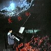
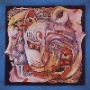

strange music page
japanese progressives * * * 美狂乱
#美狂乱はguitarの須磨さんを中心としたグループでKing Crimsonから強い影響を受けた曲（というかほとんどそのまま）を演奏していました。80年の頭に2枚のアルバムをリリースして解散した...ハズだったのですが、90年に入って８人編成で復活しました。
トリオ編成で極端にアグレッシヴなアルバムを出しました。
んで2001年にまたCD出るとか....ライヴやらないかなー？
|
- 美狂乱 (1979-1982)
- 美狂乱 (live album)
- 美狂乱 (1995-)
|
#1981に出た、美狂乱の1枚目。この1枚目を出すまでに結構色々あったらしく、ドラムが佐藤正治さんから長沢正昭さんに変わっています。佐藤正治さん在籍時の音源は
御伽世界でのみ聴けます。
他の日本のプログレとは全く異質な雰囲気を持っています。King Crimsonからの影響は色濃く出ているのですし、ギターも(70年代の)R.Frippの音なんですが、明かにCrimsonとは違う音楽になっています。息が止まるような緊張感の持続は他のどのバンドを探しても見つけられないもの。
- 二重人格 (double)
- シンシア (cynthia)
- 狂 パート2 (psycho part 2)
- ひとりごと (monologue)
- 警告 (warning)
- 須磨邦彦 (guitars,voice)
- 白鳥正英 (bass)
- 長沢正昭 (drums,percussions)
- 中西俊博 (violin)
- 中島優貴 (keyboards)
KING RECORDS/CRIME: 280E-2023 (1981)
#美狂乱の２枚目、Ｂ面全一曲の"組曲:乱"を収録。２曲目"予言"は美狂乱の中でも古い曲だそうですが、静的な面と動的な面が巧く構成されていてとても良いです。
- サイレント ランニング (silent running)
- 予言 (prediction)
- 組曲:乱 (suite: RAN)
- Prologue: 歪みすぎた空 (the sky distorting too much)
- ストレンジラヴ博士のクラクション (a klaxon of Dr.strange love)
または、非道徳的騒音の中の心理状態における分析結果
- Parallax Company
- Great Parallax
- Epilogue: 真紅の子供たち (crimson children)
- 須磨邦彦 (guitars,voice)
- 白鳥正英 (bass)
- 長沢正昭 (drums,percussions)
- 中西俊博 (violin)
- 溝口肇 (cello)
- 永川俊郎 (keyboards,mellotron)
- 岡野等 (trumpet)
KING RECORDS/CRIME: KICP-2217 (1981)
#drumsの佐藤正治さんが在籍していた初期のライヴ、1曲目は1978.11.25の電通ホールでのライヴ、他の曲は1979.12.4の渋谷屋根裏でのライヴです。
このアルバムはアナログだけでCD化の予定は無いみたいなんです。でも物凄い内容です、結構最近再発されたみたいなので、捜せば有ると思います。買いましょう。
プログレの緊張感とか好きな人には絶対お勧め、美狂乱のどのスタジオ盤よりも緊迫感があります。須磨邦雄さんもそうなんですが特に佐藤正治さんのドラムが凄いです、神憑り的というか....とにかく聴いてみましょう。

SIDE 1:
- うねり (chaos)
- 御伽世界 (fairy tale)
SIDE 2:
- 空飛ぶ穀蔵 (flight of Kokuzo)
- 未完成四重唱 (unifinished quartet)
- 予言 (prediction)
- 須磨邦雄 (guitars,voice)
- 吉永伸二 (bass)
- 佐藤正治 (drums,percussions)
- 久野真澄 (keyboards)
- 杉田孝子 (violin)
MARQUEE/BELLE ANTIQUE: BELLE-8704 (1987)
#1982.12.6の東京ACBと1983.3.22の大阪バーボンハウスでのライヴを収録。CD化の時に2.4.のボーナストラックが追加されました。
やっぱりこの緊張感は他のどの(日本以外の)プログレと比べても異質なものに思えます、聴くたびに背筋が凍るような感覚を持てるバンドなんて、滅多に現れるものじゃないです。
- 都市の情景 (vision of city)
- ひとりごと (monologue)
- 狂 part.1 (psycho part one)
- silent running
- stop breaking sense
- 風魔
- improvisation
- 須磨邦雄 (guitars,voice)
- 白鳥正英 (bass)
- 長沢正昭 (drums)
- 雨宮たくま (percussions)
MARQUEE/BELLE ANTIQUE: BELLE-9339 (1993)
#メンバーを須磨氏以外大幅に替えて8人編成での新生美狂乱、2曲目はkeyboardの女の子がvocalの静かな曲、打楽器３人のリズム体が入り交じる様は結構面白いですが、その人数を生かしきれていない様な感じもします。
ただ須磨邦雄さんのギターのトーンは相変わらず、やっぱカッコ良いです。
- 乱 Part2
- 旅の果て (journey's end)
- おもいいれ
- 狂 Part2-2 (psycho part 2-2)
- 21世紀のAfrica
- 須磨邦雄 (guitars,voices,conducts)
- 三枝寿雅 (bass,synthesizers,recorder,voices)
- 鈴木章仁 (percussions,voices)
- 陰島俊二 (drums,marimba,recorder,voices)
- 大塚琴美 (piano,synthesizers,recorder,voices)
- 望月一矢 (guitars)
- 田口正人 (percussions,timpani)
- 田沢浩司 (voices)
- 禰宣田浩一 (trumpet on 1.3.5.)
- 酒井達也 (trumpet on 1.3.5.)
- 鈴木真吾 (alto sax,bariton sax on 1.3.5.)
- 三枝晴美 (chorus on 3.)
- 柏倉晴美 (chorus on 3.)
- 石川英子 (chorus on 3.)
MARQUEE/BELLE ANTIQUE: BELLE-95149 (1995.10.25)
#最新作、トリオ編成 + keybaordで前作より80年代の音に戻った感じ。アルバムタイトル通りラウドでヘヴィなリフの狂暴な(?)曲が並びます、復活前(前作にもあった)にあった叙情的な面はほとんどなくなっています。意図的なのかどうかは知りませんが、リズムのバランスが異常にでかいです。個人的にはこのノリで50分はちょっとつらいように思いました。
8人編成で復活してから2年も経たないのに何故またトリオなのかは謎ですがいずれにしても強力なバンドになったのは確かな様です。
- 狂暴な街
- 地に足
- 狂暴な宴
- 狂暴な砦
- ひぐらし野郎
- Creep Funk
- 狂暴な悪夢
- 須磨邦彦 (guitars,vocals)
- 三枝寿雅 (bass,vocals)
- 清水禎之 (drums,vocals)
- 神谷典行 (keyboards)
FREIHEIT: FHBK-97002 (1997.10)
#美狂乱の新譜、しかも佐藤正治さん参加。今までアルバムに入ってなかった昔の曲とかがレコーディングされてます。
須磨さんのギターも相変わらずロバートフリップしてて凄いんですけど、佐藤正治さんのドラムがえれぇかっちょいーです。「空飛ぶコクゾウ」の中間部とか凄まじいです、ほんとに。
凄まじいだけでもなくって、1曲目とか6曲目はアコギとバイオリンの綺麗な曲、バイオリン弾いてるのは息子さんらしくて、結構良い感じです。やっぱ血かな？
全体通して演奏だけでなくて曲の良さってのが効いてるように思います。クリムゾンの
(現時点での)新譜よか全然良いんじゃないかと、個人的には。
ギターの音色とかスケールとかはロバートフリップにしか聴こえないんですけど、曲として聴くと全然クリムゾンじゃなくて。なんか日本人らしいウェットな感じ。もー美狂乱でしかないというか、このバンドでしか有り得ない音。
ちょっとアレなのはベースの音だけかな？須磨さんがベースも弾いてるらしいんだけど、前作と一緒でブイブイ言いすぎな感じ。
ちなみにこのCDは
晴れ後ときどきプログレの久野真澄さんの新しく立ち上げた
GOHAN LABELと言う所からのリリース。このアルバムと一緒に
レーベルサンプラー付いてきました。次に美狂乱のライヴ盤が出るとか言う噂。(2002.2.28)

- ルークウォームウォーター
- 都市の情景
- ゼンマイ仕掛け
- 御伽世界
- 未完成四重唱
- 憧れのエーデルワイス
- 空飛ぶコクゾウ
- 海の情景
- 須磨邦雄 (guitars,bass,mellotron,chorus)
- 佐藤正治 (drums,percussions,chorus)
- 久野真澄 (keyboards)
- Igarashi Yo (cello)
- Fukukawa Nobuyuki (horn)
- Suma Wasei (violin)
GOHAN RECORDS: GBK-001 (2002.2.28)
#えーと
上のについてきたGOHAN レーベルのサンプラーCDです。
美狂乱の音源は1980年のライヴみたいです。後は現美狂乱のメンバーの各ソロ用の音源で、MAGRITTE VOICEってのは元KEEPのベースの富倉安生さんのバンドみたいです。
この中だとやっぱり佐藤正治さんの音源が良さそうな感じでした。MAGMAのB.Paganottiと一緒に現在レコーディング中だとか。(2002.2.28)
- 美狂乱/海の情景
- 須磨邦雄/私の心はどうなるんですか？
- 佐藤正治/SAHARA
- MAGRITTE VOICE/FATAL EXISTENCE
- 久野真澄/シーラカンス